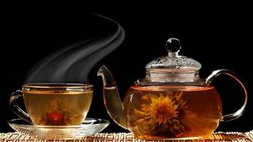
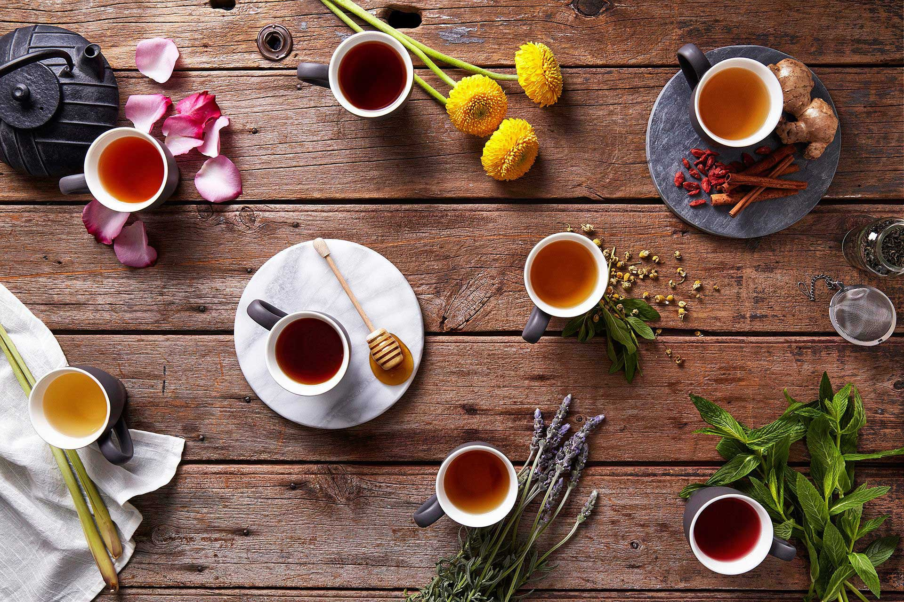

TEA &COFFEE shop
A coffeehouse, coffee shop, or café (French: [kafe]), is an establishment that serves various types of coffee, espresso, latte, americano and cappuccino. Some coffeehouses may serve cold beverages, such as iced coffee and iced tea, as well as other non-caffeinated beverages. A coffeehouse may also serve food, such as light snacks, sandwiches, muffins, cakes, breads, donuts or pastries. In continental Europe, some cafés also serve alcoholic beverages. Coffeehouses range from owner-operated small businesses to large multinational corporations. Some coffeehouse chains operate on a franchise business model, with numerous branches across various countries around the world. People engage in conversation, for it is there that news is communicated and where those
interested in politics criticize the government in all freedom and without being fearful, since the government does not heed what the people say. Innocent games ... resembling checkers, hopscotch, and chess, are played. In addition, mollas, dervishes, and poets take turns telling stories in verse or in prose. The narrations by the mollas and the dervishes are moral lessons, like our sermons, but it is not considered scandalous not to pay attention to them. No one is forced to give up his game or his conversation because of it. A molla will stand up in the middle, or at one end of the qahveh-khaneh, and begin to preach in a loud voice, or a dervish enters all of a sudden, and chastises the assembled on the vanity of the world and its material goods. It often happens that two or three people talk at the same time, one on one side, the other on the opposite, and sometimes one will be a preacher and the other a storyteller While café may refer to a coffeehouse, the term "café" can also refer to a diner, British café (also colloquially called a "caff"), "greasy spoon" (a small and inexpensive restaurant), transport café, teahouse or tea room, or other casual eating and drinking place.[1][2][3][4][5] A coffeehouse may share some of the same characteristics of a bar or restaurant, but it is different from a cafeteria. Many coffeehouses in West Asia offer shisha (actually called nargile in Levantine Arabic, Greek, and Turkish), flavored tobacco smoked through a hookah. An espresso bar is a type of coffeehouse that specializes in serving espresso and espresso-based drinks. People engage in conversation, for it is there that news is communicated and where those interested in politics criticize the government in all freedom and without being fearful, since the government does not heed what the people say. Innocent games ... resembling checkers, hopscotch, and chess, are played. In addition, mollas, dervishes, and poets take turns telling stories in verse or in prose. The narrations by the mollas and the dervishes are moral lessons, like our sermons, but it is not considered scandalous not to pay attention to them. No one is forced to give up his game or his conversation because of it. A molla will stand up in the middle, or at one end of the qahveh-khaneh, and begin to preach in a loud voice, or a dervish enters all of a sudden, and chastises the assembled on the vanity of the world and its material goods. It often happens that two or three people talk at the same time, one on one side, the other on the opposite, and sometimes one will be a preacher and the other a storyteller
From a cultural standpoint coffeehouses largely serve as centers of social interaction: a coffeehouse provides patrons with a place to congregate, talk, read, write, entertain one another, or pass the time, whether individually or in small groups. A coffeehouse can serve as an informal social club for its regular members. [6] As early as the 1950s Beatnik era and the 1960s folk music scene, coffeehouses have hosted singer-songwriter performances, typically in the evening.[7] The digital age saw the rise of the Internet café along similar principles. People engage in conversation, for it is there that news is communicated and where those interested in politics criticize the government in all freedom and without being fearful, since the government does not heed what the people say. Innocent games ... resembling checkers, hopscotch, and chess, are played. In addition, mollas, dervishes, and poets take turns telling stories in verse or in prose. The narrations by the mollas and the dervishes are moral lessons, like our sermons, but it is not considered scandalous not to pay attention to them. No one is forced to give up his game or his conversation because of it. A molla will stand up in the middle, or at one end of the qahveh-khaneh, and begin to preach in a loud voice, or a dervish enters all of a sudden, and chastises the assembled on the vanity of the world and its material goods. It often happens that two or three people talk at the same time, one on one side, the other on the opposite, and sometimes one will be a preacher and the other a storyteller
People engage in conversation, for it is there that news is communicated and where those interested in politics criticize the government in all freedom and without being fearful, since the government does not heed what the people say. Innocent games ... resembling checkers, hopscotch, and chess, are played. In addition, mollas, dervishes, and poets take turns telling stories in verse or in prose. The narrations by the mollas and the dervishes are moral lessons, like our sermons, but it is not considered scandalous not to pay attention to them. No one is forced to give up his game or his conversation because of it. A molla will stand up in the middle, or at one end of the qahveh-khaneh, and begin to preach in a loud voice, or a dervish enters all of a sudden, and chastises the assembled on the vanity of the world and its material goods. It often happens that two or three people talk at the same time, one on one side, the other on the opposite, and sometimes one will be a preacher and the other a storyteller